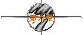
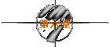
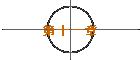
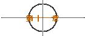

|
(至尊宝穿梭时空再一次回到洞中，却空无一人。至尊宝甚感奇怪，来到
洞外，天色已经大亮，无法借助月光穿梭时空，正没理会处，一位少女
牵着驴子走来。)
少女：神仙？
(至尊宝摇头。)
少女：妖怪？
(至尊宝不语。)
少女：谢谢！(牵驴向洞口走去)
至尊宝：喂！盘丝洞不要乱闯！
少女：盘丝洞？你当我不识字，明明是水帘洞嘛！
(至尊宝抬头看时，不禁大惊。)
少女：盘丝洞……，这个名字也蛮好听的，好，就叫盘丝洞！(手一挥，将
“水帘洞”变为“盘丝洞”)以后我住在这儿！
至尊宝：等一等！
(少女手一挥，将至尊宝打倒，又将月光宝盒抓在手中。)
少女：哎！我现在郑重宣布，这座山所有的东西都是属于我的，包括你在内！
至尊宝：我？
少女：对呀！就象我的驴子一样，给你盖个章！
(少女手一挥，至尊宝觉得脚心一痛。)
少女：你现在是我的人了，如果有人欺负你，就报我的名字，从今天起，我叫
“盘丝大仙”！
至尊宝：盘丝大仙？五百年前？！(脱下鞋，发现脚心多了三颗痣，又拿出照妖
镜一看，镜中显出猴子的模样，想起水帘洞中听到的话，不禁瞠目结舌，
呆立半晌)我不信！我不信！我不信！我不要做猴子，我要去救晶晶！
(至尊宝想闯进洞去，却被洞门砸昏，等醒来时已身在洞中。)
少女：哈哈！Yeah！Yeah！有了这个月光宝盒，以后就不怕被青霞姐追杀了！
出来呀！鬼鬼祟祟的，害羞啊，你！
至尊宝：(恭恭敬敬地走出来)Hi，这个月光宝盒呢……
少女：我的！
至尊宝：啊？
少女：我说过了，这里所有的东西都是我的，你想干吗？
至尊宝：没有没有没有，我听说你要走，能不能带我一起走？
少女：你也被人追杀啊？
至尊宝：我赶着去救人啊！
少女：救谁？
至尊宝：救我娘子，就是白晶晶，你认识她的。
少女：不认识。
至尊宝：我知道。不过，你很快就会认识她了，因为她将会做你的徒弟，还有这
个宝盒……
少女：我的！
至尊宝：我知道！不过其实是我给你，然后你再在那个时候交给我，那么才会有
我再会到这里来然后又交还给你，你明白吗？
少女：我明白了，你神经病！
至尊宝：对呀！(想了一会)反正你一定要带我走就对了。
少女：我为什么要对你那么好？
至尊宝：因为你是我的主人啊，你走了我一个人留在这里有什么意思啊？
少女：真的吗？坐！地下！手！乖，待会儿给你买件新衣服回去见你娘子。叫
啊！
至尊宝：汪！
少女：用心点儿。
至尊宝：汪汪！汪汪汪汪汪！汪汪！
(夜晚来临。)
至尊宝：仙子！快点啊！月亮出来了！走啊！
少女：(走出洞外，一脸寒霜)去哪儿？
至尊宝：你不走啊？你不走把宝盒给我，我走！
少女：你说什么宝盒？
至尊宝：我是不会再等到明天晚上了我告诉你，你快点吧！还说，等一下你那个
贱人姐姐又出来害你了！
少女：贱人！到处跟人家说我会害她！
至尊宝：什么？
少女：我就是那个贱人的姐姐，你不要听她胡说八道！贱－－－－人！那个贱
人说下凡间找什么意中人，有辱我们的师门。哼，我看你就是她找的意
中人，因为你跟她一样贱！
*
至尊宝：那个贱－－－－人是她，你就是那个贱人跟我说的那个贱人的姐姐？
* 少女：就是这个贱人。
* 至尊宝：你能不能说清楚哪个是贱人？因为现在大家都是贱人。
* 少女：我告诉你，你最贱！(一拳将至尊宝击昏)
(第二天天亮，至尊宝被少女叫醒。)
少女：至尊宝！你昨天晚上怎么不叫醒我？
(至尊宝大惊，想溜走。)
少女：喂，你怎么了？来呀！你到哪儿去？站住！坐下！椅子！
(至尊宝怕再挨打只好重新坐下。)
少女：你怎么了？怎么这样看我？你看到什么了？你看到她了？你真的看到我
姐姐了？她那么快就来了？她都跟你说了些什么？你不要相信她，她神
经病啊！可能她呢前世跟我斗得太厉害了，所有佛祖就把我们两个卷在
一起变成一根灯芯，要我们苦练修行化解这段恩怨，可惜事与愿违，现
在比以前斗得更厉害了。不要说那么多了，快点走吧！
(至尊宝不动。)
少女：你以为我精神分裂？
(至尊宝点头。)
少女：我没有啊！那个真的是我姐姐！你不相信是吧？来呀！你拿来呀！(将
自己的手与至尊宝的手绑在一起)我们把手绑在一起，今天晚上就知道
了！
(夜晚来临，少女似睡非睡。)
至尊宝：我看今晚不会有月光了。
少女：(梦呓般地)是吗？贱人，你跑不出我的五指山，哼哼哼！
(至尊宝一惊，见少女脸如寒霜，翻身坐起来。)
至尊宝：贵姓？
少女：姓林。
至尊宝：哦，原来你就是我大哥常说的那个“林青霞”啊。
少女：你大哥？
至尊宝：昨天被你打的那个家伙，叫至尊宝的。
少女：那你呢？
至尊宝：我是他的双胞胎弟弟，叫至尊玉。
少女：至尊宝、至尊玉？想骗我？
至尊宝：嘻嘻，你真是聪明伶俐。其实我大哥真名叫做秦汉，我叫秦祥林。
少女：你在这儿干什么？
至尊宝：我……我很仰慕你。
少女：你仰慕我？(将手上的布条一扬)
至尊宝：岂止是仰慕你，简直害怕失去你！所以跟你绑在一起，你接受我对你的
爱吧！我们是同一类人。
* 少女：我们为什么要是同一类人？(将布条扯断)
*
至尊宝：大家都那么恨双胞胎，如果这个世界只有一个你或只有一个我多好，偏
* 偏每边要多一个，你说这是多么地……不卫生啊。
* 少女：跟卫生有什么关系？
*
至尊宝：你们四个人搞得乱七八糟还有什么卫生啊？反正为了表达我对你的爱呢，
* 我已经把我大哥给杀了！
* 少女：杀了？
* 至尊宝：我不只杀了他，我还打算杀了你妹妹！
* 少女：真的全是为了我？
* 至尊宝：那还用得着说吗？对了，那个月光宝盒呢？
*
少女：杀了我妹妹后我自然会给你，如果让我知道你骗我的话，我会让你比现
* 在痛苦十倍！
* 至尊宝：你对我还真够好的。不过，我现在好象还不怎么痛苦。
* 少女：当然啦，我还没有出手。(又一拳将至尊宝击昏)
（未完待续）
| 


 
 


 
